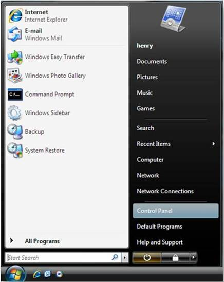

Instructional Content
Below instruction is of installation of IIS 7.0 on Windows Vista or Windows 7. Make sure that you have administrative user rights on the computer.
1.Click on Start, and then click Control Panel.

2.In the Control Panel, click on the Programs.

3. Click on Turn Windows features on or off.

4. Screen will show the Windows Security warning, click allow to continue.
5.Expand Internet Information Services (click on + sign left side of it)
6.After that progress bar dialog box appears.
7.IIS is now installed, with a default configuration on Windows. Type the url http://localhost in your browser.